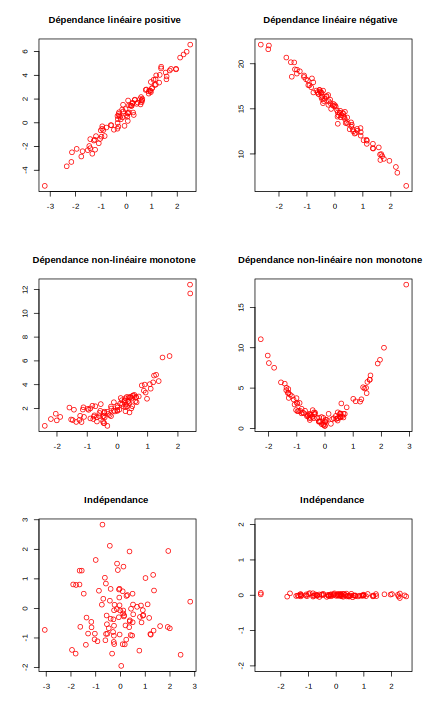
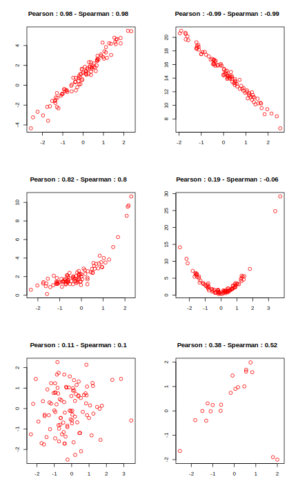
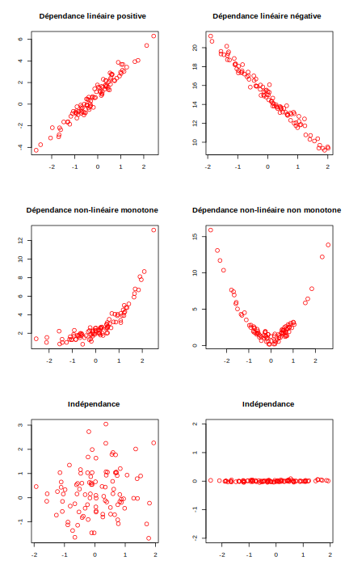
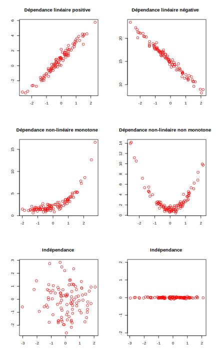
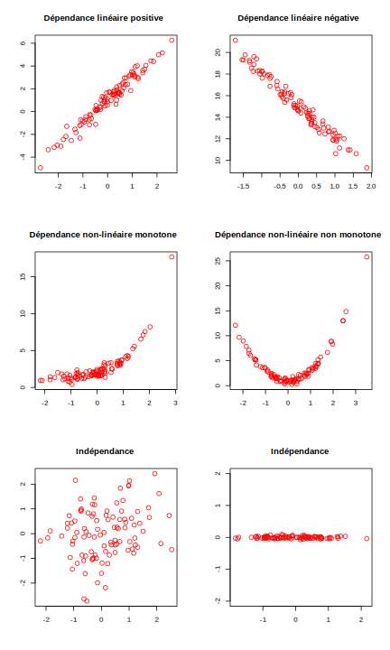
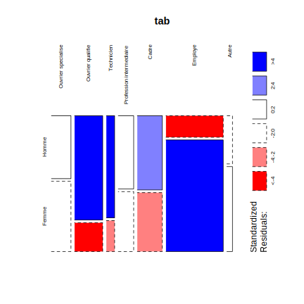
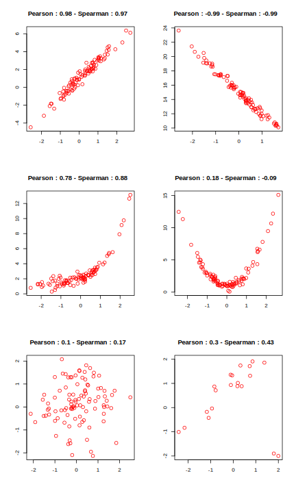

Partie 4 Analyse bivariée
Faire une analyse bivariée, c’est étudier la relation entre deux variables : sont-elles liées ? les valeurs de l’une influencent-elles les valeurs de l’autre ? ou sont-elles au contraire indépendantes ?
À noter qu’on va parler ici d’influence ou de lien, mais pas de relation de cause à effet : les outils présentés permettent de visualiser ou de déterminer une relation, mais des liens de causalité proprement dit sont plus difficiles à mettre en évidence. Il faut en effet vérifier que c’est bien telle variable qui influence telle autre et pas l’inverse, qu’il n’y a pas de “variable cachée”, etc.
Là encore, le type d’analyse ou de visualisation est déterminé par la nature qualitative ou quantitative des deux variables.
4.1 Croisement de deux variables qualitatives
4.1.1 Tableaux croisés
On va continuer à travailler avec le jeu de données tiré de l’enquête Histoire de vie inclus dans l’extension questionr. On commence donc par charger l’extension, le jeu de données, et à le renommer en un nom plus court pour gagner un peu de temps de saisie au clavier :
library(questionr)
data(hdv2003)
d <- hdv2003Quand on veut croiser deux variables qualitatives, on fait un tableau croisé. Comme pour un tri à plat ceci s’obtient avec la fonction table de R, mais à laquelle on passe cette fois deux variables en argument. Par exemple, si on veut croiser la catégorie socio professionnelle et le sexe des enquêtés :
table(d$qualif, d$sexe)
Homme Femme
Ouvrier specialise 96 107
Ouvrier qualifie 229 63
Technicien 66 20
Profession intermediaire 88 72
Cadre 145 115
Employe 96 498
Autre 21 37Pour pouvoir interpréter ce tableau on doit passer du tableau en effectifs au tableau en pourcentages ligne ou colonne. Pour cela, on peut utiliser les fonctions lprop et cprop de l’extension questionr, qu’on applique au tableau croisé précédent.
Pour calculer les pourcentages ligne :
tab <- table(d$qualif, d$sexe)
lprop(tab)
Homme Femme Total
Ouvrier specialise 47.3 52.7 100.0
Ouvrier qualifie 78.4 21.6 100.0
Technicien 76.7 23.3 100.0
Profession intermediaire 55.0 45.0 100.0
Cadre 55.8 44.2 100.0
Employe 16.2 83.8 100.0
Autre 36.2 63.8 100.0
Ensemble 44.8 55.2 100.0Et pour les pourcentages colonne :
cprop(tab)
Homme Femme Ensemble
Ouvrier specialise 13.0 11.7 12.3
Ouvrier qualifie 30.9 6.9 17.7
Technicien 8.9 2.2 5.2
Profession intermediaire 11.9 7.9 9.7
Cadre 19.6 12.6 15.7
Employe 13.0 54.6 35.9
Autre 2.8 4.1 3.5
Total 100.0 100.0 100.0 Pour savoir si on doit faire des pourcentages ligne ou colonne, on pourra se référer à l’article suivant :
http://alain-leger.lescigales.org/textes/lignecolonne.pdf
En résumé, quand on fait un tableau croisé, celui-ci est parfaitement symétrique : on peut inverser les lignes et les colonnes, ça ne change pas son interprétation. Par contre, on a toujours en tête un “sens” de lecture dans le sens où on considère que l’une des variables dépend de l’autre. Par exemple, si on croise sexe et type de profession, on dira que le type de profession dépend du sexe, et non l’inverse : le type de profession est alors la variable dépendante (à expliquer), et le sexe la variable indépendante (explicative).
Pour faciliter la lecture d’un tableau croisé, il est recommandé de faire les pourcentages sur la variable indépendante. Dans notre exemple, la variable indépendante est le sexe, elle est en colonne, on calcule donc les pourcentages colonnes qui permettent de comparer directement, pour chaque sexe, la répartition des catégories socio-professionnelles.
4.1.2 Test du χ²
Comme on travaille sur un échantillon et pas sur une population entière, on peut compléter ce tableau croisé par un test d’indépendance du χ². Celui-ci permet de rejeter l’hypothèse d’indépendance des lignes et des colonnes du tableau, c’est à dire de rejeter l’hypothèse que les écarts à l’indépendance observés seraient uniquement dus au biais d’échantillonnage (au fait qu’on n’a pas interrogé toute notre population).
Pour effectuer un test de ce type, on applique la fonction chisq.test au tableau croisé calculé précédemment :
chisq.test(tab)
Pearson's Chi-squared test
data: tab
X-squared = 387.56, df = 6, p-value < 2.2e-16Le résultat nous indique trois valeurs :
X-squared, la valeur de la statistique du χ² pour notre tableau, c’est-à-dire une “distance” entre notre tableau observé et celui attendu si les deux variables étaient indépendantes.df, le nombre de degrés de libertés du test.p-value, le fameux p, qui indique la probabilité d’obtenir une valeur de la statistique du χ² au moins aussi extrême sous l’hypothèse d’indépendance.
Ici, le p est extrêmement petit (la notation < 2.2e-16 indique qu’il est plus petit que la plus petite valeur calculable par R), donc certainement en-dessous du seuil de décision choisi préalablement au test (souvent 5%, soit 0.05). On peut donc rejeter l’hypothèse d’indépendance des lignes et des colonnes du tableau.
En complément du test du χ², on peut aussi regarder les résidus de ce test pour affiner la lecture du tableau. Ceux-ci s’obtiennent avec la fonction chisq.residuals de questionr :
chisq.residuals(tab)
Homme Femme
Ouvrier specialise 0.52 -0.47
Ouvrier qualifie 8.57 -7.73
Technicien 4.42 -3.98
Profession intermediaire 1.92 -1.73
Cadre 2.64 -2.38
Employe -10.43 9.41
Autre -0.98 0.88L’interprétation des résidus est la suivante :
- si la valeur du résidu pour une case est inférieure à -2, alors il y a une sous-représentation de cette case dans le tableau : les effectifs sont significativement plus faibles que ceux attendus sous l’hypothèse d’indépendance
- à l’inverse, si le résidu est supérieur à 2, il y a sur-représentatation de cette case
- si le résidu est compris entre -2 et 2, il n’y a pas d’écart à l’indépendance significatif
Les résidus peuvent être une aide utile à l’interprétation, notamment pour des tableaux de grande dimension.
4.1.3 Représentation graphique
Il est possible de faire une représentation graphique d’un tableau croisé, par exemple avec la fonction mosaicplot :
mosaicplot(tab)
On peut améliorer ce graphique en colorant les cases selon les résidus du test du χ² (argument shade = TRUE) et en orientant verticalement les labels de colonnes (argument las = 3) :
mosaicplot(tab, las = 3, shade = TRUE)
Chaque rectangle de ce graphique représente une case de tableau. Sa largeur correspond au pourcentage des modalités en colonnes (il y’a beaucoup d’employés et d’ouvriers et très peu d’“autres”). Sa hauteur correspond aux pourcentages colonnes : la proportion d’hommes chez les cadres est plus élevée que chez les employés. Enfin, la couleur de la case correspond au résidu du test du χ² correspondant : les cases en rouge sont sous-représentées, les cases en bleu sur-représentées, et les cases blanches sont proches des effectifs attendus sous l’hypothèse d’indépendance.
4.2 Croisement d’une variable quantitative et d’une variable qualitative
4.2.1 Représentation graphique
Croiser une variable quantitative et une variable qualitative, c’est essayer de voir si les valeurs de la variable quantitative se répartissent différemment selon la catégorie d’appartenance de la variable qualitative.
Pour cela, l’idéal est de commencer par une représentation graphique de type “boîte à moustache” à l’aide de la fonction boxplot. Par exemple, si on veut visualiser la répartition des âges selon la pratique ou non d’un sport, on va utiliser la syntaxe suivante :
boxplot(d$age ~ d$sport)
Cette syntaxe de boxplot utilise une nouvelle notation de type “formule”. Celle-ci est utilisée notamment pour la spécification des modèles de régression. Ici le ~ peut se lire comme “en fonction de” : on veut représenter le boxplot de l’âge en fonction du sport.
Ce qui va nous donner le résultat suivant :

L’interprétation d’un boxplot est la suivante : Les bords inférieurs et supérieurs du carré central représentent le premier et le troisième quartile de la variable représentée sur l’axe vertical. On a donc 50% de nos observations dans cet intervalle. Le trait horizontal dans le carré représente la médiane. Enfin, des “moustaches” s’étendent de chaque côté du carré, jusqu’aux valeurs minimales et maximales, avec une exception : si des valeurs sont éloignées du carré de plus de 1,5 fois l’écart interquartile (la hauteur du carré), alors on les représente sous forme de points (symbolisant des valeurs considérées comme “extrêmes”).
Dans le graphique ci-dessus, on voit que ceux qui ont pratiqué un sport au cours des douze derniers mois ont l’air d’être sensiblement plus jeunes que les autres.
4.2.2 Calculs d’indicateurs
On peut aussi vouloir comparer certains indicateurs (moyenne, médiane) d’une variable quantitative selon les modalités d’une variable qualitative. Si on reprend l’exemple précédent, on peut calculer la moyenne d’âge pour ceux qui pratiquent un sport et pour ceux qui n’en pratiquent pas.
Une première méthode pour cela est d’extraire de notre population autant de sous-populations qu’il y a de modalités dans la variable qualitative. On peut le faire notamment avec la fonction filter du package dplyr.9
On commence par charger dplyr (en l’ayant préalablement installé) :
library(dplyr)Puis on applique filter pour créer deux sous-populations, stockées dans deux nouveaux tableaux de données :
d_sport <- filter(d, sport == "Oui")
d_nonsport <- filter(d, sport == "Non")On peut ensuite utiliser ces deux nouveaux tableaux de données comme on en a l’habitude, et calculer les deux moyennes d’âge :
mean(d_sport$age)[1] 40.92531mean(d_nonsport$age)[1] 52.25137Une autre possibilité est d’utiliser la fonction tapply, qui prend en paramètre une variable quantitative, une variable qualitative et une fonction, puis applique automatiquement la fonction aux valeurs de la variables quantitative pour chaque niveau de la variable qualitative :
tapply(d$age, d$sport, mean) Non Oui
52.25137 40.92531 On verra dans la partie 10 d’autres méthodes basées sur dplyr pour effectuer ce genre d’opérations.
4.2.3 Tests statistiques
Un des tests les plus connus est le test du t de Student, qui permet de tester si les moyennes de deux sous-populations peuvent être considérées comme différentes (compte tenu des fluctuations aléatoires provenant du biais d’échantillonnage).
Un test t s’effectue à l’aide de la fonction t.test. Ainsi, on peut tester l’hypothèse d’égalité des âges moyens selon la pratique ou non d’un sport avec la commande suivante :
t.test(d$age ~ d$sport)
Welch Two Sample t-test
data: d$age by d$sport
t = 15.503, df = 1600.4, p-value < 2.2e-16
alternative hypothesis: true difference in means is not equal to 0
95 percent confidence interval:
9.893117 12.759002
sample estimates:
mean in group Non mean in group Oui
52.25137 40.92531 Le résultat du test est significatif, avec un p extrêmement petit, et on peut rejeter l’hypothèse nulle d’égalité des moyennes des deux groupes. Le test nous donne même un intervalle de confiance à 95% pour la valeur de la différence entre les deux moyennes.
Nous sommes cependant allés un peu vite, et avons négligé le fait que le test t s’applique normalement à des distributions normales. On peut se faire un premier aperçu visuel de cette normalité en traçant les histogrammes des deux répartitions :
hist(d_sport$age)
hist(d_nonsport$age)
Si l’âge dans le groupe des non sportifs se rapproche d’une distribution normale, celui des sportifs en semble assez éloigné, notamment du fait de la limite d’âge à 18 ans imposée par construction de l’enquête.
On peut tester cette normalité à l’aide du test de Shapiro-Wilk et de la fonction shapiro.test :
shapiro.test(d_sport$age)
Shapiro-Wilk normality test
data: d_sport$age
W = 0.96203, p-value = 9.734e-13shapiro.test(d_nonsport$age)
Shapiro-Wilk normality test
data: d_nonsport$age
W = 0.98844, p-value = 1.654e-08Le test est significatif dans les deux cas et rejette l’hypothèse d’une normalité des deux distributions.
Dans ce cas on peut faire appel à un test non-paramétrique, qui ne fait donc pas d’hypothèses sur les lois de distribution des variables testées, en l’occurrence le test des rangs de Wilcoxon, à l’aide de la fonction wilcox.test :
wilcox.test(d$age ~ d$sport)
Wilcoxon rank sum test with continuity correction
data: d$age by d$sport
W = 640580, p-value < 2.2e-16
alternative hypothesis: true location shift is not equal to 0La valeur p étant à nouveau extrêmement petite, on peut rejeter l’hypothèse d’indépendance et considérer que les distributions des âges dans les deux sous-populations sont différentes.
4.3 Croisement de deux variables quantitatives
Le jeu de données hdv2003 comportant assez peu de variables quantitatives, on va s’intéresser maintenant à un autre jeu de données comportant des informations du recensement de la population de 2012. On le charge avec :
data(rp2012)Un nouveau tableau de données rp2012 devrait apparaître dans votre environnement. Celui-ci comprend les 5170 communes de Métropole de plus de 2000 habitants, et une soixantaine de variables telles que le département, la population, le taux de chômage, etc. Pour une description plus complète et une liste des variables, voir section A.3.2.3.
4.3.1 Représentation graphique
Quand on croise deux variables quantitatives, l’idéal est de faire une représentation graphique sous forme de nuage de points à l’aide de la fonction plot. On va représenter le croisement entre le pourcentage de cadres et le pourcentage de diplômés du supérieur dans la commune :
plot(rp2012$cadres, rp2012$proprio)
Une représentation graphique est l’idéal pour visualiser l’existence d’un lien entre les deux variables. Voici quelques exemples d’interprétation :

Dans ce premier graphique généré sur nos données, il semble difficile de mettre en évidence une relation de dépendance. Si par contre on croise le pourcentage de cadres et celui de diplômés du supérieur, on obtient une belle relation de dépendance linéaire.
plot(rp2012$cadres, rp2012$dipl_sup)
4.3.2 Calcul d’indicateurs
En plus d’une représentation graphique, on peut calculer certains indicateurs permettant de mesurer le degré d’association de deux variables quantitatives.
4.3.2.1 Corrélation linéaire (Pearson)
La corrélation est une mesure du lien d’association linéaire entre deux variables quantitatives. Sa valeur varie entre -1 et 1. Si la corrélation vaut -1, il s’agit d’une association linéaire négative parfaite. Si elle vaut 1, il s’agit d’une association linéaire positive parfaite. Si elle vaut 0, il n’y a aucune association linéaire entre les variables.
On la calcule dans R à l’aide de la fonction cor.
Ainsi la corrélation entre le pourcentage de cadres et celui de diplômés du supérieur vaut :
cor(rp2012$cadres, rp2012$dipl_sup)[1] 0.9371629Ce qui est extrêmement fort. Il y a donc un lien linéaire et positif entre les deux variables (quand la valeur de l’une augmente, la valeur de l’autre augmente également).
À l’inverse, la corrélation entre le pourcentage de cadres et le pourcentage de propriétaires vaut :
cor(rp2012$cadres, rp2012$proprio)[1] 0.1622786Ce qui indique, pour nos données, une absence de liaison linéaire entre les deux variables.
4.3.2.2 Corrélation des rangs (Spearman)
Le coefficient de corrélation de Pearson ci-dessus fait une hypothèse forte sur les données : elles doivent être liées par une association linéaire. Quand ça n’est pas le cas mais qu’on est en présence d’une association monotone, on peut utiliser un autre coefficient, le coefficient de corrélation des rangs de Spearman.
Plutôt que de se baser sur les valeurs des variables, cette corrélation va se baser sur leurs rangs, c’est-à-dire sur leur position parmi les différentes valeurs prises par les variables.
Ainsi, si la valeur la plus basse de la première variable est associée à la valeur la plus basse de la deuxième, et ainsi de suite jusqu’à la valeur la plus haute, on obtiendra une corrélation de 1. Si la valeur la plus forte de la première variable est associée à la valeur la plus faible de la seconde, et ainsi de suite, et que la valeur la plus faible de la première est associée à la plus forte de la deuxième, on obtiendra une corrélation de -1. Si les rangs sont “mélangés”, sans rapports entre eux, on obtiendra une corrélation autour de 0.

La corrélation des rangs a aussi pour avantage d’être moins sensibles aux valeurs extrêmes ou aux points isolés. On dit qu’elle est plus “robuste”.
Pour calculer une corrélation de Spearman, on utilise la fonction cor mais avec l’argument method = "spearman" :
cor(rp2012$cadres, rp2012$dipl_sup, method = "spearman")[1] 0.90362734.3.3 Régression linéaire
Quand on est en présence d’une association linéaire entre deux variables, on peut vouloir faire la régression linéaire d’une des variables sur l’autres.
Une régression linéaire simple se fait à l’aide de la fonction lm :
lm(rp2012$cadres ~ rp2012$dipl_sup)
Call:
lm(formula = rp2012$cadres ~ rp2012$dipl_sup)
Coefficients:
(Intercept) rp2012$dipl_sup
0.9217 1.0816
On retrouve avec lm la syntaxe “formule” déjà rencontrée avec boxplot. Elle permet ici de spécifier des modèles de régression : la variable dépendante se place à gauche du ~, et la variable indépendante à droite. Si on souhaite faire une régression multiple avec plusieurs variables indépendantes, on aura une formule du type dep ~ indep1 + indep2. Il est également possible de spécifier des termes plus complexes, des interactions, etc.
lm nous renvoit par défaut les coefficients de la droite de régression :
- l’ordonnée à l’origine
(Intercept)vaut 0.92 - le coefficient associé à
dipl_supvaut 1.08
Pour des résultats plus détaillés, on peut stocker le résultat de la régression dans un objet et utiliser la fonction summary :
reg <- lm(rp2012$cadres ~ rp2012$dipl_sup)
summary(reg)
Call:
lm(formula = rp2012$cadres ~ rp2012$dipl_sup)
Residuals:
Min 1Q Median 3Q Max
-33.218 -1.606 -0.172 1.491 13.001
Coefficients:
Estimate Std. Error t value Pr(>|t|)
(Intercept) 0.921661 0.071814 12.83 <2e-16 ***
rp2012$dipl_sup 1.081636 0.005601 193.10 <2e-16 ***
---
Signif. codes: 0 '***' 0.001 '**' 0.01 '*' 0.05 '.' 0.1 ' ' 1
Residual standard error: 2.701 on 5168 degrees of freedom
Multiple R-squared: 0.8783, Adjusted R-squared: 0.8783
F-statistic: 3.729e+04 on 1 and 5168 DF, p-value: < 2.2e-16Ces résultats montrent notamment que les coefficients sont significativement différents de 0. La part de cadres augmente donc bien avec celle de diplômés du supérieur.
On peut enfin représenter la droite de régression sur notre nuage de points à l’aide de la fonction abline :
plot(rp2012$dipl_sup, rp2012$cadres)
abline(reg, col="red")
4.4 Exercices
Exercice 1
Dans le jeu de données hdv2003, faire le tableau croisé entre la catégorie socio-professionnelle (variable qualif) et le fait de croire ou non en l’existence des classes sociales (variable clso). Identifier la variable indépendante et la variable dépendante, et calculer les pourcentages ligne ou colonne. Interpréter le résultat.
Faire un test du χ². Peut-on rejeter l’hypothèse d’indépendance ?
Représenter ce tableau croisé sous la forme d’un mosaicplot en colorant les cases selon les résidus du test du χ².
Exercice 2
Toujours sur le jeu de données hdv2003, faire le boxplot qui croise le nombre d’heure passé devant la télévision (variable heures.tv) avec le statut d’occupation (variable occup).
Calculer la durée moyenne en fonction du statut d’occupation à l’aide de tapply.
Exercice 3
Sur le jeu de données rp2012, représenter le nuage de points croisant le pourcentage de personnes sans diplôme (variable dipl_aucun) et le pourcentage de propriétaires (variable proprio).
Calculer le coefficient de corrélation linéaire correspondant.